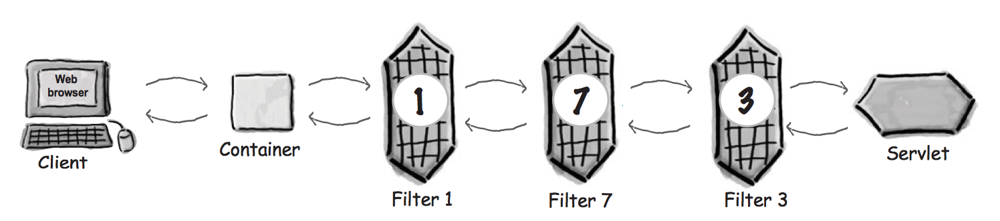
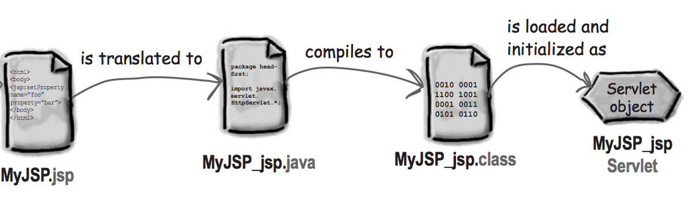
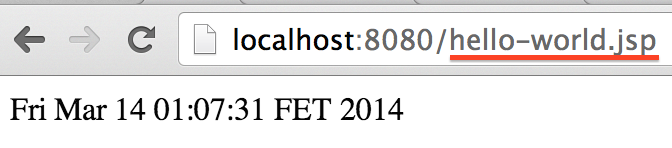

Servlet API
Java Server Pages (JSP)
Часть 2
© 2014 Sergey KraucheniaFilter
Переиспользуемый кусок кода, который может изменять содержимое HTTP-запроса/ответа и их заголовкиГде фильтр может быть полезен?
- Если нужен доступ к ресурсу до того как запрос начнет обрабатываться
- Изменение заголовков запроса/ответа и данных с помощью оборачивания его в вашу собственную версию объекта запроса/ответа
- Если нужно что-то сделать до или после вызова обработчика запроса
Примеры использования фильтра
- Фильтр аутентификации
- Фильтр авторизации
- Фильтр логирования и аудита
- Фильтр сжатия данных
- Фильтр шифрования
- Кеширующий фильтр
Исполнение цепочки фильтров
Фильтр замеряющий время выполнения
@WebFilter("/*")
public class TimeMeasurementFilter implements Filter {
private Logger logger = Logger.getAnonymousLogger();
@Override
public void init(FilterConfig filterConfig) throws ServletException {}
@Override
public void doFilter(ServletRequest request, ServletResponse response, FilterChain chain)
throws IOException, ServletException {
long start = System.currentTimeMillis();
chain.doFilter(request, response);
long end = System.currentTimeMillis();
HttpServletRequest httpRequest = (HttpServletRequest) request;
String path = httpRequest.getRequestURI();
String method = httpRequest.getMethod();
logger.info(String.format("%s '%s' - done (%d ms)", method, path, end - start));
}
@Override
public void destroy() {}
}
Пользовательская сессия
- Протокол HTTP не содержит состояния, соответственно сервер "не помнит" кого он обслуживал ранее.
- Для пользователя желательно иметь возможность "запомнить" данные о себе в приложении.
Cookie
- Фрагмент данных созданный сервером, отдаётся пользователю как часть HTTP ответа и этот же фрагмент данных браузер должен отправлять на сервер при следующих запросах.
- Cookie имеет следующие атрибуты:
- Name – имя Cookie
- Domain – имя сервера
- MaxAge – через какое время Cookiе считать недействительным
- Value – значение, которое нужно сохранить
- Размер Cookie ограничен (несколько килобайт)
- HttpServletResponse.addCookie создаёт Cookie в Java приложении
HTTP Session management
- Привязка пользователя к сессии осуществляется с помощью JSESSIONID
- При создании сессии через request.getSession(true) или request.getSession(false) генерируется JSESSIONID и кладется в Cookie
- Не стоит злоупотреблять сессией и хранить там большие объемы данных.
Пример
protected void doPost(HttpServletRequest req, HttpServletResponse resp) {
String login = req.getParameter("login");
String password = req.getParameter("password");
if (loginIsCorrect(login, password)) {
HttpSession session = req.getSession(true);
session.setAttribute("userId", login);
}
}
Java Server Pages (JSP)
Технология, позволяющая легко и гибко создавать динамический веб-контент (HTML, XML и т.д.)JSP-страница это тоже Servlet
Создайте на одном уровне с WEB-INF файл hello-world.jsp
<html>
<body>
<%
out.println(new java.util.Date());
%>
</body>
</html>
Все, что между символами <% и %> называется скриптлет и является обычным java-кодом
Так как JSP это сервлет, она будет доступна по следующему URL
С помощью директива page можно импортировать классы
<%@ page import="java.util.Date" %>
<html>
<body>
<%= new Date() %>
</body>
</html>
Мы добавили знак равно и теперь это не скриптлет, а выражение
Итого
- Scriptlet: <% %>
- Directive: <%@ %>
- Expression: <%= %>
Так во что же транслируется jsp?
/*
* Generated by the Jasper component of Apache Tomcat
* Version: Apache Tomcat/8.0.3
* Generated at: 2014-03-13 22:48:58 UTC
* Note: The last modified time of this file was set to
* the last modified time of the source file after
* generation to assist with modification tracking.
*/
package org.apache.jsp;
import javax.servlet.*;
import javax.servlet.http.*;
import javax.servlet.jsp.*;
import java.util.Date;
public final class hello_002dworld_jsp extends org.apache.jasper.runtime.HttpJspBase
implements org.apache.jasper.runtime.JspSourceDependent {
private static final javax.servlet.jsp.JspFactory _jspxFactory =
javax.servlet.jsp.JspFactory.getDefaultFactory();
private static java.util.Map<java.lang.String,java.lang.Long> _jspx_dependants;
private javax.el.ExpressionFactory _el_expressionfactory;
private org.apache.tomcat.InstanceManager _jsp_instancemanager;
public java.util.Map<java.lang.String,java.lang.Long> getDependants() {
return _jspx_dependants;
}
public void _jspInit() {
_el_expressionfactory = _jspxFactory.getJspApplicationContext(getServletConfig().getServletContext()).getExpressionFactory();
_jsp_instancemanager = org.apache.jasper.runtime.InstanceManagerFactory.getInstanceManager(getServletConfig());
}
public void _jspDestroy() {
}
public void _jspService(final javax.servlet.http.HttpServletRequest request, final javax.servlet.http.HttpServletResponse response)
throws java.io.IOException, javax.servlet.ServletException {
final javax.servlet.jsp.PageContext pageContext;
javax.servlet.http.HttpSession session = null;
final javax.servlet.ServletContext application;
final javax.servlet.ServletConfig config;
javax.servlet.jsp.JspWriter out = null;
final java.lang.Object page = this;
javax.servlet.jsp.JspWriter _jspx_out = null;
javax.servlet.jsp.PageContext _jspx_page_context = null;
try {
response.setContentType("text/html");
pageContext = _jspxFactory.getPageContext(this, request, response,
null, true, 8192, true);
_jspx_page_context = pageContext;
application = pageContext.getServletContext();
config = pageContext.getServletConfig();
session = pageContext.getSession();
out = pageContext.getOut();
_jspx_out = out;
out.write("\n");
out.write("<html>\n");
out.write(" <body>\n");
out.write(" ");
out.print( new Date() );
out.write("\n");
out.write(" </body>\n");
out.write("</html>\n");
} catch (java.lang.Throwable t) {
if (!(t instanceof javax.servlet.jsp.SkipPageException)){
out = _jspx_out;
if (out != null && out.getBufferSize() != 0)
try { out.clearBuffer(); } catch (java.io.IOException e) {}
if (_jspx_page_context != null) _jspx_page_context.handlePageException(t);
else throw new ServletException(t);
}
} finally {
_jspxFactory.releasePageContext(_jspx_page_context);
}
}
}
Неявные объекты, доступные на странице
- JspWriter - out
- HttpServletRequest - request
- HttpServletResponse - response
- HttpSession - session
- ServletContext - application
- ServletConfig - config
- PageContext - pageContext
- Object - page
Директивы:
- page - <%@ page import="java.util.Date" session="false" %>
- Определяет специфичные для страницы свойства - кодировку, Content-Type. Всего около 13 свойств
- taglib - <%@ taglib tagdir=”/WEB-INF/tags/myLib” prefix=”my” %>
- Объявляет кастомную библиотеку тэгов, которая будет доступна на этой странице
- include - <%@ include file=”header.jsp” %>
- Добавляет к странице в месте объявления содержимое файла. Позволяет создавать общие части для многих страниц - header, footer, menu и переиспользовать их в разных страницах
Scriptlets considered harmful?
Yes!!111
- Трудно поддерживать
- Кроме java разработчика существуют еще дизайнеры, верстальщики и т.д. которые не знают java
Expression Language (EL)
Способен полностью заменить скриптлеты. Если вдруг это становится невозможным или излишне громоздким, то может этому коду вообще не место в JSP и его стоит перенести в сервлет или в другую часть программы?EL это всегда что-то начинающееся с $ и обрамленное в фигурные скобки
${something}EL expression
${requestScope.mail}
Java expression
<%= request.getAttribute("mail") %>
Точка
Используется для доступа к свойствам JavaBean или к значениям в Map
${person.name}
- Если person это JavaBean, то name это его свойство
- Если person это Map, то name это ключ
Квадратные скобки - [ ]
Используется для доступа к свойствам JavaBean или к значениям в Map, List, array
${person["name"]}
${person[name]} // ошибка
${persons[1]}
${persons["0"]} // тоже допустимо
- Если значение в [ ] строка, то левая часть выражения должен быть либо Map либо bean
- Если значение в [ ] число, то левая часть выражения должен быть либо List либо array
// servlet
Map<String, String> musicMap = new HashMap<>();
musicMap.put("Grunge", "Nirvana");
request.setAttribute("musicMap", musicMap);
request.setAttribute("Genre", "Grunge");
// jsp
Music is ${musicMap[Genre]}
// преобразуется в
Music is ${musicMap["Grunge"]}
// преобразуется в
Music is Nirvana
Вложенные выражения
// servlet
Map<String, String> musicMap = new HashMap<>();
musicMap.put("Grunge", "Nirvana");
String[] genres = {"Grunge", "Pop"};
request.setAttribute("musicMap", musicMap);
request.setAttribute("genres", genres);
// jsp
Music is ${musicMap[genres[0]]}
// преобразуется в
Music is ${musicMap["Grunge"]}
// преобразуется в
Music is Nirvana
Неявные объекты, доступные в EL
- pageScope, requestScope, sessionScope, applicationScope - Scoped variables
- param, paramValues - Maps of the request parameters
- header, headerValues - Maps of the request headers
- cookie - Cookie values
- pageContext - The JSP PageContext object for the current page
param и paramValues
http://localhost:8080/myPage.jsp?genre=Grunge&genre=Pop
${param.genre} // Grunge
${paramValues.genre[1]} // Pop
requestScope != request object
requestScope это просто Map, содержащая аттрибуты запроса. Чтобы получить доступ к текущему объекту request, можно использовать pageContext
${pageContext.request}
pageScope, requestScope, sessionScope, applicationScope
Если вам не важно где находится нужный вам объект, в requestScope или sessionScope, то обращение к scope* не обязательно
// servlet
request.setAttribute("personName", "Fedor");
// JSP
${requestScope.personName} // Fedor
${personName} // Fedor
EL functions
Если вам нужно больше функциональности, чем просто доступ к данным, вы можете реализовать свои EL-функции и использовать их
Функция имитации броска кубика
1. Реализуйте функцию как статический метод
public class DiceRoller {
public static int rollDice() {
return (int) ((Math.random() * 6) + 1);
}
}
2. Создайте файл с описанием функции - Tag Library Descriptor (TLD)
/WEB-INF/myFunctions.tld
<?xml version="1.0" encoding="ISO-8859-1" ?>
<taglib xmlns="http://java.sun.com/xml/ns/j2ee" xmlns:xsi="http://www.w3.org/2001/XMLSchema-instance" xsi:schemaLocation="http://java.sun.com/xml/ns/j2ee/web-jsptaglibrary_2_0.xsd" version="2.0">
<tlib-version>1.2</tlib-version>
<uri>MyFunctions</uri>
<function>
<name>rollIt</name>
<function-class>foo.DiceRoller</function-class>
<function-signature>
int rollDice()
</function-signature>
</function>
</taglib>
3. Использование в JSP
<%@ taglib prefix="mine" uri="MyFunctions" %>
<html>
<body>
${mine:rollIt()}
</body>
</html>
Header, Footer, Menu, etc
Header и Footer может повторяться из страницы к странице. Так же вы можете иметь и другие общие компоненты на странице. Эти повторяющиеся части кода можно вынести в отдельные файлы и переиспользовать с помощью директивы include или функции <jsp: include/>
Директива include
Директива говорит контейнеру "скопируй все, что есть во включаемом файле и вставь прямо сюда"
header.jsp
<img src="header.png">
<h3>My super application</h3>
page.jsp
...
<%@ include file=”Header.jsp”%>
...
Функция <jsp: include/>
Вставляет ответ включаемой jsp-страницы
...
<jsp:include page=”Header.jsp” />
...
Кастомизация с помощью <jsp:param>
Позволяет передать параметры во включаемый файл для большей гибкости. Например название текущей страницы
<jsp:include page="header.jsp">
<jsp:param name="currentPageTitle" value="User profile"/>
</jsp:include>
header.jsp
<em><strong>${param.currentPageTitle}</strong></em>
Функция <jsp:forward/>
Передает исполнение другой JSP или сервлету
<jsp:forward page="/tasks"/>
Note: Когда вы делаете перенаправление, буфер объекта HttpServletResponse очищается
JSP Standard Tag Library (JSTL)
Предоставляют большой набор полезных функций
Сross Site Sсriрting
Внедрении в выдаваемую веб-системой страницу вредоносного кода
Пример XSS
// servlet
String style = "<style>body {background: red;}</style>";
String script = "<script>alert('Hi there!')</script>";
request.setAttribute("someStyle", style);
request.setAttribute("someScript", script);
// JSP
<body>
${someStyle}
${someScript}
</body>
Так как содержимое переменной выводится как есть, в результате цвет фона всего документа изменится на красный и будет показан диалог с сообщением "Hi there!"
Функция <c:out>
Позволяет выводить контент и экранировать специальные символы
<c:out value="${someStyle}"/>
Функция <c:forEach>
Используется для итерирования по элементам коллекции
<table class="table table-hover">
<tr>
<th>Title</th>
</tr>
<c:forEach items="${tasks}" var="task">
<tr>
<td><c:out value="${task.title}"/></td>
</tr>
</c:forEach>
</table>
Доступные операторы
- . - Access a bean property or Map entry
- [] - Access an array or List element
- ( ) - Group a subexpression to change the evaluation order
- + - * / % - Arithmetic operators
- == - Test for equality
- != - Test for inequality
- < -Test for less than
- И т.д.
Зарезервированные слова
- lt, le, gt, ge
- eq, ne, true, false
- and, or, not, instanceof
- div, mod, empty, null
Функция <c:if>
Позволяет строить условные выражения
<c:if test="${not empty tasks}">
<table class="table table-hover">
<tr>
<th>Title</th>
</tr>
...
</table>
</c:if>
Функция <c:choose> и <c:when> с <c:otherwise>
Позволяет реализовать конструкцию if else
<c:choose>
<c:when test=”${userPref == 'performance'}”>
Now you can stop even if you <em>do</em> drive insanely fast.
</c:when>
<c:when test=”${userPref == 'safety'}”>
Our brakes will never lock up, no matter how bad a driver you are
</c:when>
<c:when test=”${userPref == 'maintenance'}”>
Lost your tech job? No problem--you won't have to service these brakes for at least three years.
</c:when>
<c:otherwise>
Our brakes are the best.
</c:otherwise>
</c:choose>
Функция <c:set> (1/2)
Устанавливает значение аттрибута
<c:set var="language" value="en_US" scope="session"/>
либо значение в Map или поля JavaBean
<c:set target=”${PetMap}” property=”dogName” value=”Clover” />
Функция <c:set> (2/2)
- Нельзя устанавливать и target и var
- scope опционален. Значение по умолчанию - page
- Если value == null, аттрибут с именем, указанным в "var", будет удален
- Если аттрибута с именем, указанным в "var" нет, он будет создан, но только, если value != null
- Если target == null, контейнер кинет исключение
- Если значение в target не bean и не Map, контейнер кинет исключение
- Если bean не имеет свойства, указанного в property, контейнер кинет исключение
Функция <c:remove>
Удаляет аттрибут из контекстного объекта
<c:remove var="userStatus" scope="request"/>
Подключение tld
Чтобы все вышеуказанные функции были доступны для использования на странице, нужно сделать следующее:
- Объявить tld с помощью директивы taglib
<%@ taglib prefix="c" uri="http://java.sun.com/jsp/jstl/core" %>
Tag Files
Служит для объявления своих собственных тэгов
Header tag
/WEB-INF/tags/header.tag
<%@ attribute name="subTitle" required="true" rtexprvalue="true" %>
<em><strong>${subTitle}</strong></em>
<%@ taglib prefix="myTags" tagdir="/WEB-INF/tags" %>
<html>
<body>
<myTags:header subTitle="We take the String out of SOAP"/>
...
</html>
<jsp:doBody/> (1/2)
Используется для получения доступа к данным, которые могли быть указаны в теле тега
/WEB-INF/tags/header.tag
<em><strong><jsp:doBody/></strong></em>
my.jsp
<%@ taglib prefix="myTags" tagdir="/WEB-INF/tags" %>
<myTags:header>
very very long description
</myTags:header>
Проверка вводимых данных (валидация)
- Все данные, вводимые пользователем должны проверяться на корректность
- числовые поля не содержат букв
- обязательные поля заполненны
- значения находятся в допустимых пределах
- и т.д.
- Для валидации полей формы можно использовать новые возможности, предоставляющиеся в HTML5
- Помимо клиентской валидации обязательно должна присутствовать и серверная
Basic Authentication
- Логин/пароль запрашивает браузер
- Полученные логин и пароль пересылаются серверу (при этом используется кодировка Base64)
- Замечания
- BASIC аутентификация поддерживается широким кругом приложений
- Кодировка Base64 ≠ Шифрование. Рекомендуется дополнительно использовать протокол HTTPS
- Не существует стандартного решения, чтобы сделать Log Out
Настройка сервера
- Добавить пользователя в tomcat-users.xml
<tomcat-users>
<role rolename="administrator"/>
<user username="admin" password="11111" roles="administrator"/>
</tomcat-users>
Фрагмент web.xml (приложение)
<!-- Security settings-->
<security-constraint>
<web-resource-collection>
<web-resource-name>securePages</web-resource-name>
<url-pattern>/pages/secure/*</url-pattern>
</web-resource-collection>
<auth-constraint>
<role-name>administrator</role-name>
</auth-constraint>
</security-constraint>
<login-config>
<auth-method>BASIC</auth-method>
<realm-name>Demo for students</realm-name>
</login-config>
Доступ к защищённым URL

Задания
- Самостоятельно ознакомиться с Web.xml - deployment descriptor
- Просмотреть уже реализованные вами JSP, сервлеты и, если необходимо, изменить, применяя полученные сегодня знания